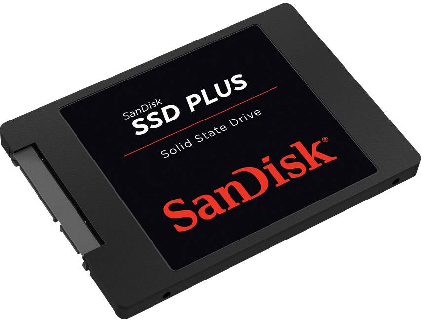
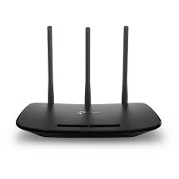

Hardverek
- CPU
- Central Processing Unit, vagyis processzor. Számításokat végez és irányít.
- SSD
- Solid State Drive, véletlen hozzáférésű memória. A merevlemez utódja. Előnye, hogy nincsenek benne mozgó alkatrészek.

- Router
- Periféria. A helyi számítógép-hálózatot csatlakoztatja az internethez.

- Monitor
- Periféria. Képet jelenít meg. Fajtái például a CRT és a LCD.